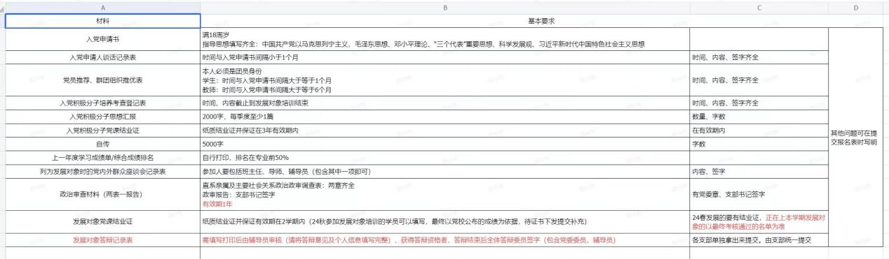

入党经验
叠甲：本文仅分享个人经历，具体标准要求根据时间变化可能有所不同，请基于实际通知完成任务。此外，隔壁文件夹内有部分需要的参考材料，一些材料包含个人材料内容，仅供参考，请勿抄袭，否则后果自负。
材料参考
各种材料的模板
发展对象答辩所需的材料清单：
入党流程是：群众——入党积极分子——发展对象——预备党员——党员
从提交入党申请书算起至少需要两年的时间才可以走完全部流程。我将依照自己的亲身经历为同学们提供一些各个阶段建议与说明。
第一阶段：群众——入党积极分子
1）入党申请书：
这是你要写的第一份材料，需要手写在专门的纸上。不可以有涂改，如果写错可以用透明胶带或者美工刀把字刮掉。入党申请书上的时间需要记住，后面会多次用到。提交后会发回，需要自行保管，在发展对象答辩时提交。
2）入党申请人谈话记录表：
在提交了入党申请书之后党组织会安排人与你谈话，如果入党申请书存在一些表述错误会在这时候指出。可以采取透明胶带修改或者直接重写有误的那一页。谈话完你会获得一份入党申请人谈话记录表。
3）群团推优表：
由团支书组织一次会议讨论是否同意推荐你成为积极分子，会有一份群团推优表，需要团支书签字。表格这里注意要有确定性结论（综上…）。
4）积极分子培训班：
由学校统一安排时间，一般是在周末。需要一整天听讲座，但是考勤比较松，只要签到签退，请假的话每请一节课需要交一份800字的自学心得。有很多形式各异的任务，例如：每天晚上在群里发培训心得、参加一次小班会、完成一次红色视频拍摄、手写一份2000字的培训心得。这些任务难度都不大。最后有一个结课考试，利用U学院答题。50道单选，20道多选，10道判断，其中单选与判断每题一分，多选每题两分，只有完全选对才得分。要60分才能通过考试。考前会放出大约700题的题库给你看，争取把题库都过一遍，里面的题挺刁钻的，想裸考直接过的话还是蛮有难度的。成功通过后会获得一张结业证书（也有可能放在辅导员处统一保管）。如果是在自己手中记得妥善保管。
第二阶段：入党积极分子——发展对象
这一阶段时长一年，需要准备的材料比较多，建议提前准备，不要到快要查了再赶，几天内写四份思想汇报两篇读书心得一篇自传一篇学习心得是非常痛苦的，需要手写20004+15002+5000+3000=19000字。而且学习强国一天只能学四十多分，想速通是不现实的。
1）学习强国：
需要每学期2000分，一天最多学40+。从积极分子到发展对象要一个学期，也就是4000分，最后检查分数截图。
2）思想汇报：
每季度一份，每份手写2000字，专用纸，共四份，注意落款日期写每季度中间，如2023.11.15，（否则容易被打回去。亲身经历：写了2024.1.1,4.1,7.1,10.1四篇，结果被打回来重改说没有23年第四季度的，重改很麻烦）。
3）读书心得：
每学期一份，每份手写1500字，建议写专用纸上（思想汇报稿纸模版改成读书心得即可），共两份
4）志愿活动：
积极分子期间平均每学期至少一次，这个好像查的比较松，但是一定要有。
5）“我来讲党课”活动：
每学期一次，共两次，群里有时会发通知，参加某某活动可以记录一次“我来讲党课”活动，三十分钟左右，当观众即可，不需要自己去讲。
6）培养联系人：
班主任和辅导员，只有在最后签字的时候会用到，群里没催就不用着急，最后再找就可以了。
7）发展对象培训班：
与入党积极分子培训班大致相同。最后也是用U学院考试。题型为：50道单选，15道多选，1道默写（手机打字默写入党誓词）。与小组作业分加权后超过60即可成为发展对象，获得发展对象培训班结业证。
8）入党积极分子考察培养表：
按理说是一成为积极分子就会有，但是我那时候是要交材料的时候才让我们临时补的。上面的各种日期及内容需要谨慎填写。可以先用铅笔填然后拍照问党支部的书记让他检查一遍再抄。
第三阶段：发展对象——预备党员
发展对象到预备党员没有最低时间间隔（原则上是一个月），所以可以在成为发展对象后马上参加答辩。但是答辩需要较为严格的检查材料，所以这部分的很多材料都在发展对象培训班时候就开始准备了。
1）自传：
手写5000字，专用纸，需要有落款，日期为确认发展对象之后，开始集中培训之前。
2）政审材料：
需要填写两张表然后寄给父母让他们找党委的党委盖章，盖好章后再寄回来，再自己填写一份报告。由于这个时间会非常紧，如果父母单位要求不太严格，建议拿到学校盖章请示说明后直接拍照发给父母，同时发给父母电子版表格，这样家里能快一点填完盖章之后发回学校。
3）成绩单：
材料里需要打印学习成绩单和综合成绩排名。注意是两个都要，不能只打印其中一份。在T4一楼可以打印（建议）。
4）答辩记录表：
填写后打印，答辩时候用。
5）答辩
三分钟讲PPT，讲完后会提问。我所打听到的问题有：作为班委你都具体做了哪些工作？中国共产党的性质？在寒招中你有什么感悟？五大发展理念？三大作风？两个维护？一个中心两个基本点？（问题答不上来很扣分）评委可能是郑毅还有一些党支部的学长。注意着装正式（重点），PPT使用红色模板，多放一些图片。PPT要有重点，突出自己的优势。答辩是所有流程里最难通过的一项，2024秋季答辩的通过率是50%左右，通过答辩且所有材料没有问题即可成为预备党员。
第四阶段：预备党员——党员
（待补充）